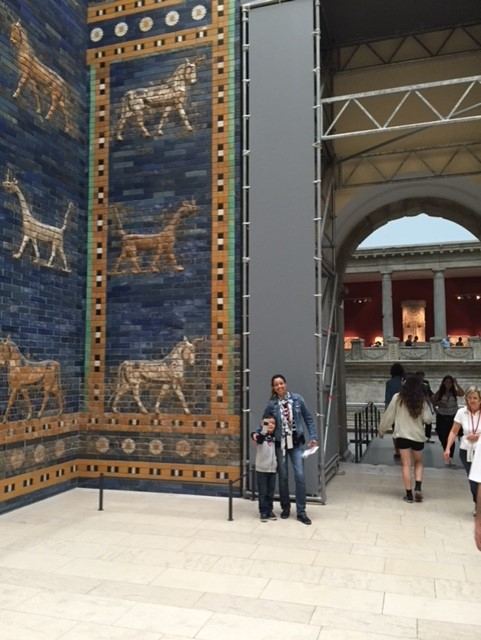
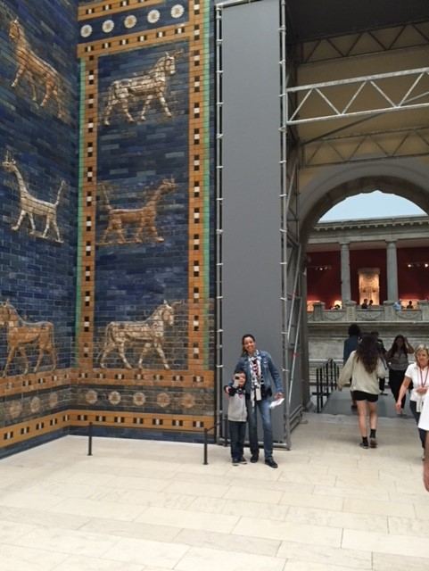
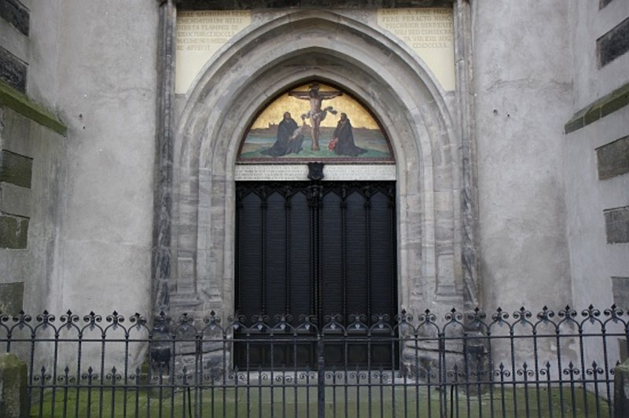

Two weeks in Europe with Emilio
... and a short life to remember.
A taste of East Germany
Two years ago, due to some scientific meetings my wife Amalia
had in the east of Germany, we travelled there with our son Emilio.
After landing in Berlin, where we spent two days, we headed to Jena.
It is not only history that will strike you here, but the present too.
And the amazing number of great places nearby, and a little further away.
Some wonders of Berlin
But first things first. We went through the unrepeatable experience of catching a taxi at
Tegel airport in a rainy summer Sunday afternoon to our first stop at the
Natural Science Museum. Why going first to the museum and not to the hotel?
If you are asking this question means you don't have a five year old who had been promised
to see the biggest T. Rex ever exhibited. And the museum was closed on Monday.
 Carola Radke / MfN")
Of course, if you want your friends to acknowledge that you were in Berlin
you should necessarily show your photo at the Brandenburg Gate. But if you want to impress
your most intellectual acquaintances there's nothing like you and your mom contemplating
one of the eight gates of old Babylon (Ishtar Gate) in the Pergamon Museum.
 Rictor Norton") 

Jena is more than glass and philosophy.
Well, too many musea for a couple of days. Let's hit the autobahn and drive at 120 mph.
Once in Jena, after checking nobody lost any limb during my driving down there,
we headed to the Schwarzer Bär (aka The Black Bear) hotel. A modern place that lodged
the very real Martin Luther in 1520. And Prussian Chancellor Otto von Bismarck in 1890.
 Schwarzer Baer Hotel Jena")
Jena is a beautiful city. In its ancient university the most prestigious wise men
taught and attended. Philosophers Fichte, Hegel, Schelling, Schopenhauer, Carnap;
writers and poets Schiller and Schlegel; scientists and/or mathematicians Leibnitz, Stiefel,
Haeckel, Frege, Abbe, Schott, Zeiss were teachers (or students), and the great Goethe
was in charge of the administrative reforms, when he was not being romantic.

Bach, Bauhaus, Luther.
Despite all the places to visit in Jena, I could not forget how close I was to the autobahn
and its dazzling (absence of) speed limit. J. S. Bach was waiting for me in Köthen
(from 1717 to 1723), so, there we went. At the castle we visited the little Court theatre where,
almost certainly, he played the Brandenburg Concerti for the first time.
I still feel the goosebumps.

An hour away from Köthen is Dessau, a backwater of the former GDR, with the most
insulting soviet-style industrial architecture, and where the greatest design school ever
is located: the Bauhaus. How contradictory! Thanks to the love of Emilio's kindergarten teacher
for abstract art, the Klee, Kandinsky, Mondrian and Picasso were household names for my 5 year old.
So I felt compelled to visit the Kandinsky/Klee's house.
 wuestenrot-stiftung.de")

Before the end of the day we drove just a few kilometers (no autobahn) to the Castle church in Wittenberg, the place
where my former famous co-lodger, Martin Luther, started Reformation just 500 years ago. Apparently he nailed
the 95 thesis to the church's door. To another door, not to this bronze one.
